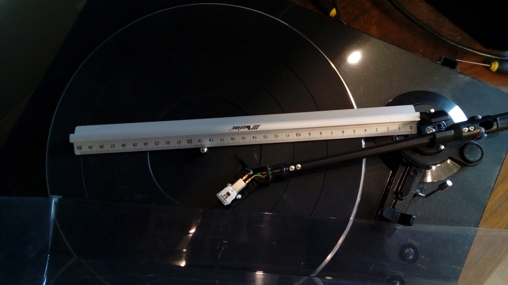

Dlaczego muszę zmierzyć odległość montażową samemu?
Ponieważ bardzo często producenci olewają dokonywanie jakichkolwiek pomiarów swoich urządzeń i dane podawane przez producenta bardzo często są niekompletne i niedokładne. Co więcej nie raz czytałem o kątomierzach łukowych dostarczanych przez producentów, którymi nie można było ustawić wkładki gramofonowej. Jak się później okazywało, były to kopie kątomierzy z gramofonów o zupełnie innych parametrach innych producentów!
Dlatego właśnie aby zapewnić sobie najwyższą możliwą jakość dźwięku odtwarzania to należy w pierwszej kolejności zmierzyć niezbędne parametry i wyliczyć pozostałe do wydrukowania naszego własnego, customowego kątomierza.
Na potrzeby mojego generatora wystarczy, że zmierzysz odległość montażową. Z dokładnością do 1 miejsca po przecinku.
Co to jest odległość montażowa?
Jest to odległość między osią obrotu ramienia gramofonu, a osią obrotu talerza gramofonu (trzpienia).
Jak wyznaczyć odległość montażową?
Będziesz potrzebować telefonu z dobrym aparatem o wysokiej rozdzielczości, linijkę kreślarską dobrej jakości oraz prawdopodobnie jakieś narzędzia do rozkręcenia ramienia gramofonu.
Cały myk polega na umieszczeniu linijki na talerzu gramofonu w taki sposób, że będziemy w stanie dokładnie zmierzyć odległość przy pomocy zdjęcia z aparatu i dowolnego programu graficznego, który umożliwia nam mierzenie odległości w prostej linii (nawet IrfanView to potrafi).
Posłużę się przykładem tego zdjęcia.
W tym konkretnym przypadku aby dokładnie zmierzyć odległość montażową musiałem zdemontować ramię gramofonu, aby widzieć śrubę łożyska, wyznaczającą środek obrotu ramienia.
Najpierw mierzymy 30cm na linijce i odczytujemy odległość w pikselach zdjęcia.
Potem mierzymy odległość montażową i odczytujemy odległość w pikselach.
Następnie robimy to co w szkole: mnożymy oba porównania na krzyż i szukamy odległości montażowej w mm. Czyli w tym przypadku otrzymamy iloczyn 300 [mm] i odległości montażowej w pikselach dzielone przez odległość 30cm w pikselach.
Jeśli będziemy wystarczająco dokładni to pozwoli nam na obliczenie odległości montażowej z dokładnością do 1/10 mm.
Gdy już się uporamy z pomiarami oraz z obliczeniami to pora przejść do samego generatora kątomierza.